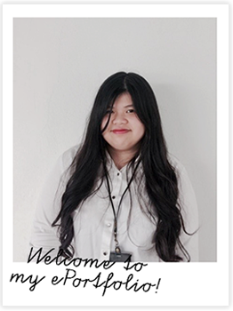

Hello, my name is Nur Alya Maryam and welcome to my ePortfolio about my personal project, Writing Log!
I am currently a student in UNIMAS persuing Master in Information Technology Management (MITM). I hold a diploma in Public Administration and a degree in Teaching English as a Second Language (TESL).
I enjoy navigating through many different fields as it keeps my interest at bay. There are a lot of things for me to learn and I would like to continue learning new things as I go.
Educational Background
2015 - 2018 UNIVERSITY TEKNOLOGI MARA
Diploma in Public Admistration
2018 - 2022 UNIVERSITI TEKNOLOGI MARA
Bachelor of Education (Hons.)
Teaching English as a Second Language
My Hobbies
There are many things I enjoy!
If I had to narrow it down, my favourite things would boil down to writing, graphic designing and creating friends from all over the world through games.
This ePortfolio was created to highlight one of my hobbies, writing. It is a hobby that I have found pretty relaxing, especially when I'm able to talk about things that interest me. There are all sorts of ways to write and express yourself, there is no limitation!